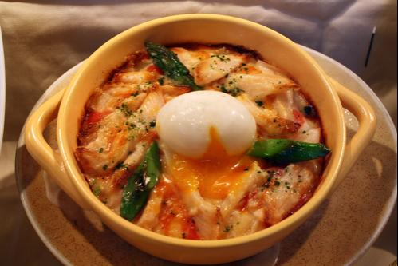
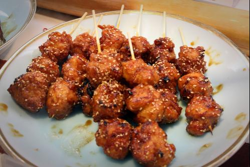

Tervetuloa Keittokirja Onlineen. Sivut ja järjestelmä ovat toistaiseksi työn alla, joten pyydän varautumaan outouksiin.
Keittokirja Online tarjoaa käyttäjälleen mahdollisuuden löytää sopivia reseptejä ja ateriakokonaisuuksia sekä jakaa omat ideansa muiden käyttäjien kanssa vaivattomasti selaimen välityksellä.
Sivuston kuvat ovat sivulta FoodPhotoSite.com

